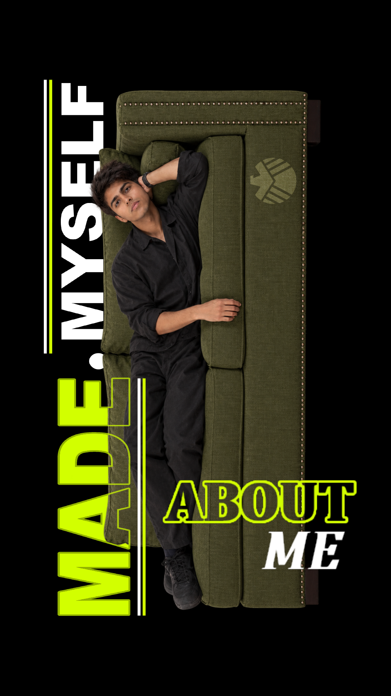

Not your typical anything.

- Subject
- M. Umer Khan
- Origin
- Karachi, PK
- Class
- Hybrid Builder
- Status
- A2 / Initiating Uni Apps
- Directive
- Build. Break. Iterate.

I am a self-taught developer and creator who turns complexity into clarity, and ideas into working systems.
I bridge logic and creativity without compromise. Whether I’m writing Python scripts, building web applications, or designing 3D environments, I treat every problem as a puzzle worth solving from every angle. I don’t just follow steps; I connect them, refine them, and deliver results that feel both precise and imaginative.
My path has never been linear. I’ve moved from periods of stagnation into focused creation, from external pressure into the freedom to build what matters. That shift taught me resilience, curiosity, and the ability to adapt quickly, qualities I bring to every project and every new skill I take on.
I’m currently applying to Software Engineering and AI Engineering programs. I’m open to work, open to collaboration, and genuinely open to learning whatever comes next. If you need someone who can handle multi-step challenges, bring creative solutions to the table, and grow with the work; I’m ready.
I build stuff because I can’t sit still.
It started with cardboard web-shooters and late-night experiments. It grew into 3D animation at 2 AM, then into wrangling local AI models, because JARVIS isn’t going to build himself, and neither will the things that actually matter.
I break things constantly. I keep way too many tabs open. I learned Blender from YouTube, Python from the docs, and patience from debugging disasters that were entirely my fault. Every crash taught me something. Every fix made me sharper.
But this isn’t just about making cool things. I love solving problems: messy ones, creative ones, the kind that feel impossible until they suddenly aren’t. I want to help. I want the work I do to matter beyond my screen. Somewhere between the code and the concepts, I keep hoping I can put a small dent in the bigger problems this world keeps throwing at us.
I know I’m still early in this journey, but I’m hungry. I don’t wait for permission to learn something new. I just start building, and I don’t stop until it works, or until I understand why it doesn’t. So if there’s something worth building, something worth solving, or simply something I’ve never touched before, I’m already curious. And I’d genuinely appreciate the chance to learn it with you.